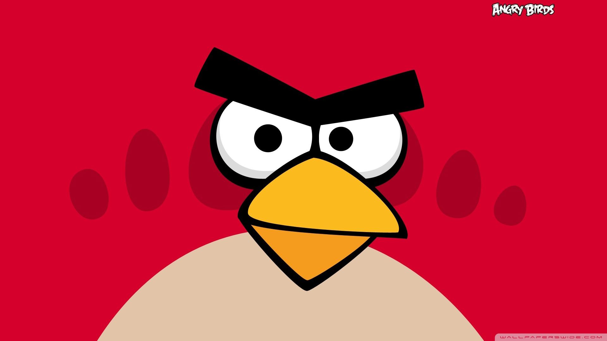

Angry-Birdz
Angry Birds is a Finnish action, puzzle, and strategy based media franchise created by Rovio Entertainment. The game series focuses on the eponymous flock of colorful angry birds who try to save their eggs from green-colored pigs. Inspired by the game Crush the Castle,[1] the game has been praised for its successful combination of fun gameplay, comical style, and low price. Its popularity led to many spin-offs; versions of Angry Birds created for PCs and video game consoles, a market for merchandise featuring its characters, Angry Birds Toons, a televised animated series, and two films; The Angry Birds Movie and its sequel The Angry Birds Movie 2. By January 2014, there had been over 2 billion downloads across all platforms, including both regular and special editions.[2][3] By July 2015, the series' games had been downloaded more than 3 billion times collectively,[4] making it the most downloaded freemium game series of all time. The original Angry Birds has been called "One of the most mainstream games out right now",[5] "One of the great runaway hits of 2010",[6] and "The largest mobile app success the world has seen so far".[7] The first main-series video game sequel, Angry Birds 2, was released on 30 July 2015.
- 